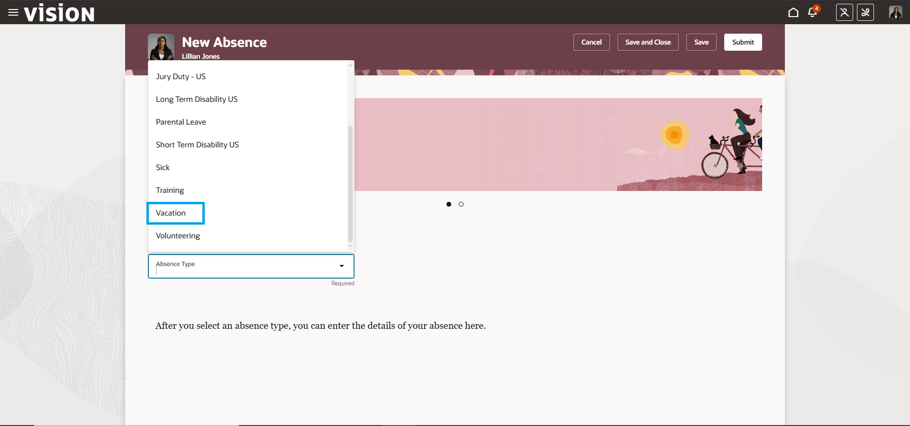
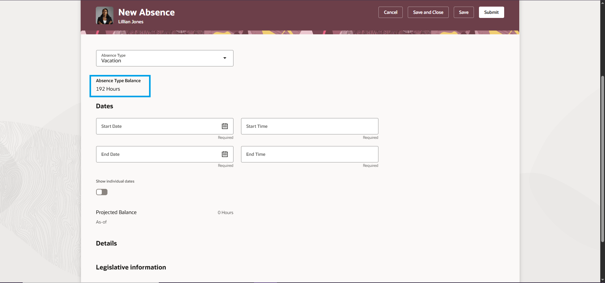
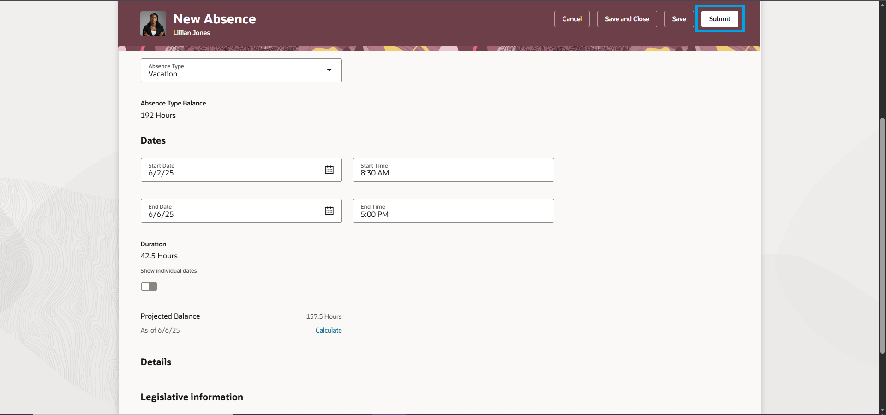

Absence Management
How to Add an Absences
01 - To access your Absences, Navigate to the Me tab on the homepage and select the Time and Absence tile.

02 -On the Time and Absence homepage click on the Add Absence tab.

03 -You are now on the Add Absence dashboard.

04 -From the drop-down list select the Absence Type.
05 -The Highlited number is the number of days an employee is alloced for the type of Absence selected. It shows if an employee is eligible for an absence or not.
06 -Fill in the feilds then click on submit
How to check Existing Absences
01 -On the Time and Absence homepage click on the Existing Absences tab.

02 -On the Existing Absence page all absences are displayed